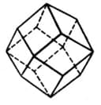

Rhombic dodecahedron (En). Ромбододекаэдр (ромбический додекаэдр, гранатоэдр) (Ru).
Barcha qirralari, tetraedrik 109,47°ga teng burchakli, bir hil romblar hisoblangan 24 qirrali va 14 uchiga ega bo’lgan o’n ikki yoqlik (29-rasm). 4ta yoqning o'tkir burchaklari kesishadigan 6ta uchi va 3ta yoqning o'tmas burchaklari kesishadigan 8ta uchi mavjud. Uni 8 ta qo'shni kublar markazlariga qo'shib, bir kubdan olish mumkin. Rombododekedrning simmetriyasi m3m(Oh).

29-rasm. Rombododecaedron